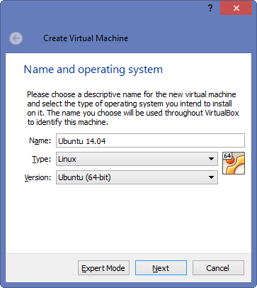
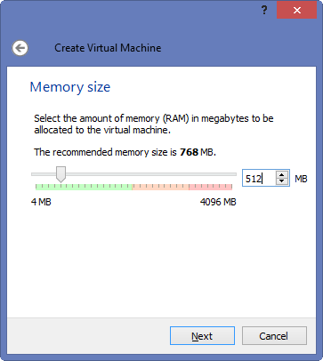
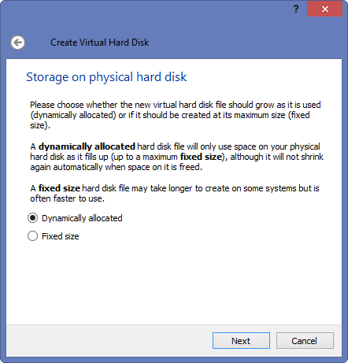
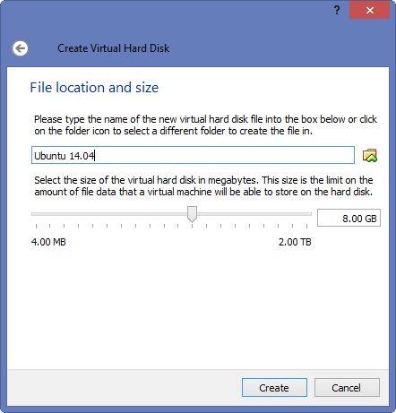
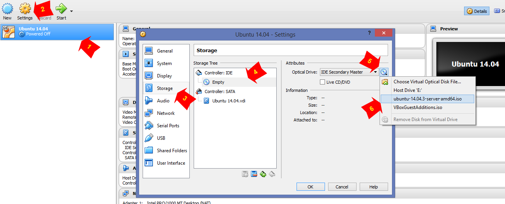
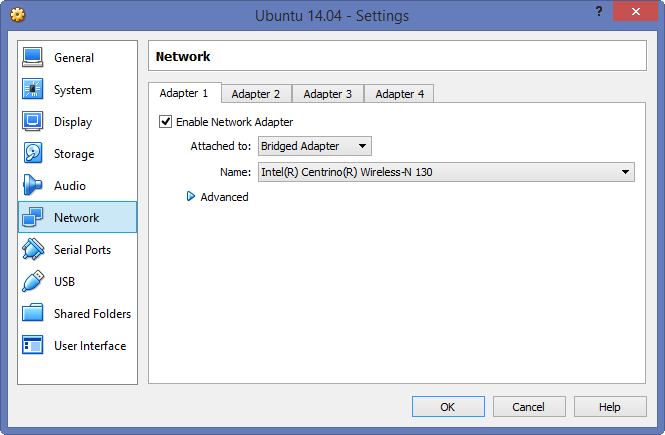
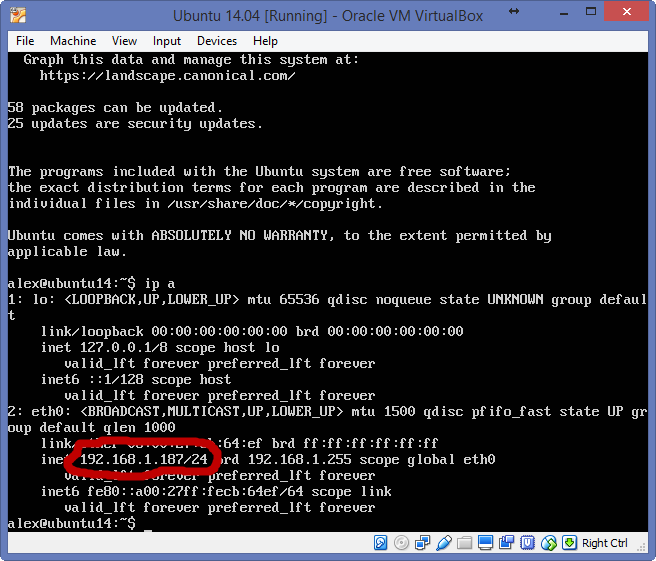
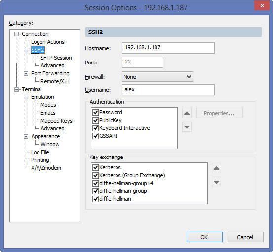
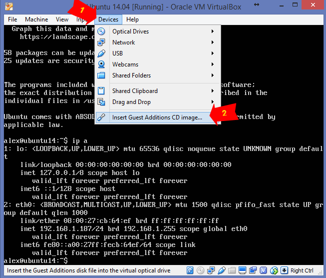

Vagrant_SSH
Vagrant. Создание собственного box-a
В предыдущей статье мы установили Vagrant под Windows 8.1 и запустили тестовый образ из hashicorp репозитория. В продолжение знакомства с Vagrant возьмемся за настройку собственного VirtualBox образа-темплейта.
Зачем это нужно? Да потому, что неизвестно что там установлено и настроено в hashicorp box-ах, так как туда каждый может залить свою сборку. Поэтому, я думаю, что скачать нужный дистрибутив с официального сайта и настроить его под себя будет намного безопасней та и полезней. В данной статье мы будем создавать темплейт на основе Ubuntu 14.04 под VirtualBox провайдер.
1. Установка и подготовка гостевой ОС
1.1. Установка гостевой ОС
Для начала качаем последний образ Ubuntu 14.04 здесь.
Далее, открываем VirtualBox и создаем новую виртуальную машину.




Теперь добавляем скаченный образ Ubuntu 14.04 в роли загрузочного диска.

Для удобного SSH доступа поставим сетевой адаптер в режим Bridget, чтобы виртуальная машина получила адрес из той же сети, в которой находится хостовая.

Далее запускаем виртуальную машину и устанавливаем Ubuntu 14.04 (установка индивидуальная). При установке был создан юзер с именем – alex и поставлен OpenSSH server.
Для SSH доступа нам нужен IP: логинимся на новосозданную гостевую машину через VirtualBox интерфейс и смотрим, какой IP нам присвоили.

Далее, запускаем SSH-клиент (я использую SecureCRT) и логинимся созданным юзером/паролем на гостевую ОС.

Теперь приступаем к настройке.
1.2. Подготовка гостевой ОС
Следующий этап – это подготовка виртуальной машины к созданию box-а. Для того, чтобы Vagrant мог вносить изменения в настройки виртуальной машины нужно:
1.2.1 Установка Guest Additions
Для того, чтобы Vagrant мог полнофункционально работать с Vbox машинами (создавать шару и т.п.) нужно установить Дополнения гостевой ОС. Для этого нужно вставить виртуальный диск в новосозданную ОС.

Смонтировать диск.
|
2 3 4 5 6 7 8 9 10 11 12 13 |
root@ubuntu14:~# mount /dev/cdrom /media/cdrom mount: block device /dev/sr0 is write-protected, mounting read-only
root@ubuntu14:~# df -h Filesystem Size Used Avail Use% Mounted on /dev/sda1 7.3G 1.4G 5.5G 21% / none 4.0K 0 4.0K 0% /sys/fs/cgroup udev 235M 4.0K 235M 1% /dev tmpfs 49M 472K 49M 1% /run none 5.0M 0 5.0M 0% /run/lock none 245M 0 245M 0% /run/shm none 100M 0 100M 0% /run/user /dev/sr0 57M 57M 0 100% /media/cdrom |
Установить дополнительные пакеты.
|
root@ubuntu14:~# apt-get install linux-headers-generic build-essential dkms --no-install-recommends |
И, напоследок, запустить установку Guest Additions.
|
2 3 4 5 6 7 8 9 10 11 12 13 14 |
root@ubuntu14:~# sh /media/cdrom/VBoxLinuxAdditions.run Verifying archive integrity... All good. Uncompressing VirtualBox 5.0.6 Guest Additions for Linux............ VirtualBox Guest Additions installer Copying additional installer modules ... Installing additional modules ... Removing existing VirtualBox DKMS kernel modules ...done. Removing existing VirtualBox non-DKMS kernel modules ...done. Building the VirtualBox Guest Additions kernel modules ...done. Doing non-kernel setup of the Guest Additions ...done. You should restart your guest to make sure the new modules are actually used
Installing the Window System drivers Could not find the X.Org or XFree86 Window System, skipping. |
1.2.2 Беспарольный sudo
По дефолту, Vagrant использует юзера “vagrant”, который должен иметь беспарольный доступ к административным действиям. Это поведение можно изменить через Vagrantfile, но в данном случае, мы просто добавим юзера vagrant, внесем его в группу sudo, а для всех членов этой группы сделаем беспарольный доступ.
Добавляем юзера vagrant и вносим его в группу sudo.
|
2 3 4 5 6 7 8 9 10 11 12 13 14 15 16 17 18 19 20 21 22 |
root@ubuntu14:~# adduser vagrant Adding user `vagrant' ... Adding new group `vagrant' (1001) ... Adding new user `vagrant' (1001) with group `vagrant' ... Creating home directory `/home/vagrant' ... Copying files from `/etc/skel' ... Enter new UNIX password: Retype new UNIX password: passwd: password updated successfully Changing the user information for vagrant Enter the new value, or press ENTER for the default Full Name []: Room Number []: Work Phone []: Home Phone []: Other []: Is the information correct? [Y/n]
root@ubuntu14:~# adduser vagrant sudo Adding user `vagrant' to group `sudo' ... Adding user vagrant to group sudo Done. |
Делаем беспарольный доступ для всех членов группы sudo.
|
2 3 4 5 |
root@ubuntu14:~# visudo … # Allow members of group sudo to execute any command %sudo ALL=(ALL:ALL) NOPASSWD: ALL … |
1.2.3 SSH доступ
Для подключения к гостевой ОС Vagrant, по дефолту, использует юзера “vagrant” с паролем “vagrant”. Если этот способ подключения не удался – используется OpenSSH ключик. Это поведение тоже можно изменить дополнительными опциями в Vagrantfile, но в данном случаи мы настроим доступ по ключу.
Добавляем authorized_keys для SSH доступа. Vagrant, по умолчанию, использует этот приватный ключ для подключения. Значит нам нужно скопировать vagrant.pub и сохранить как authorized_keys.
|
2 3 4 5 6 7 |
root@ubuntu14:~# mkdir /home/vagrant/.ssh root@ubuntu14:~# vim /home/vagrant/.ssh/authorized_keys ssh-rsa AAAAB3NzaC1yc2EAAAABIwAAAQEA6NF8iallvQVp22WDkTkyrtvp9eWW6A8YVr+kz4TjGYe7gHzIw+niNltGEFHzD8+v1I2YJ6oXevct1YeS0o9HZyN1Q9qgCgzUFtdOKLv6IedplqoPkcmF0aYet2PkEDo3MlTBckFXPITAMzF8dJSIFo9D8HfdOV0IAdx4O7PtixWKn5y2hMNG0zQPyUecp4pzC6kivAIhyfHilFR61RGL+GPXQ2MWZWFYbAGjyiYJnAmCP3NOTd0jMZEnDkbUvxhMmBYSdETk1rRgm+R4LOzFUGaHqHDLKLX+FIPKcF96hrucXzcWyLbIbEgE98OHlnVYCzRdK8jlqm8tehUc9c9WhQ== vagrant insecure public key
root@ubuntu14:~# chmod 700 /home/vagrant/.ssh/ root@ubuntu14:~# chmod 600 /home/vagrant/.ssh/authorized_keys root@ubuntu14:~# chown -R vagrant:vagrant /home/vagrant/.ssh |
На данном этапе можно настроить ssh по ключу для остальных пользователей и внести все нужные для вас изменения в будущий box-темплейт.
Также можно обновить «Message of the day» — это те сообщения, которые Вы видите, когда логинитесь в ОС.
|
2 3 4 5 6 7 8 |
root@ubuntu14:~# vim /etc/motd ... [ -r /etc/lsb-release ] && . /etc/lsb-release printf "%25s %5s %s %s %s\n" "Vagrant Box:" "$DISTRIB_DESCRIPTION" "$(uname -o)" "$(uname -r)" "$(uname -m)" printf "%25s %5s" "Vagrant Box version:" "$(cat /etc/box-version)" ... root@ubuntu14:~# cat /etc/box-version 1.0.0 |
Теперь, при логине в ОС мы увидим сообщение о релизе и версию бокса. Когда версия поменяется, все что нужно сделать, это обновить файл /etc/box-version
2. Создание Vagrant box-a
Виртуальная машина подготовлена. Теперь можно запустить powershell и начать создание нового box-a. Переходим в папку в которой мы запускали первую машину используя Vagrant, и смотрим какие у нас уже есть темплейты.
|
2 3 4 5 6 |
PS D:\> cd .\vagrant_test
PS D:\vagrant_test> vagrant box list hashicorp/precise32 (virtualbox, 1.0.0)
PS D:\vagrant_test> |
Это стандартный темплейт, который мы скачали. Теперь создадим темплейт на основе подготовленной ОС.
Для этого нам нужно только название виртуальной машины из Vbox, в нашем случаи это «Ubuntu 14.04».
|
2 3 4 5 |
PS D:\vagrant_test> vagrant package --base 'Ubuntu 14.04' --output Ubuntu_14.04_template ==> Ubuntu 14.04: Exporting VM... ==> Ubuntu 14.04: Compressing package to: D:/vagrant_test/Ubuntu_14.04_template
PS D:\vagrant_test> |
Теперь у нас в папке появиться подготовленный “Ubuntu_14.04_template” образ. Осталось добавить его в список доступных box-ов.
|
2 3 4 5 6 7 8 |
PS D:\vagrant_test> vagrant box add Ubuntu_14.04_template --name 'ubuntu 14.04' ==> box: Box file was not detected as metadata. Adding it directly... ==> box: Adding box 'ubuntu 14.04' (v0) for provider: box: Unpacking necessary files from: file://D:/vagrant_test/Ubuntu_14.04_template box: Progress: 100% (Rate: 66.9M/s, Estimated time remaining: --:--:--) ==> box: Successfully added box 'ubuntu 14.04' (v0) for 'virtualbox'!
PS D:\vagrant_test> |
Теперь создаем виртуальную машину на основе нашего box-а. Для этого редактируем Vagrantfile.
|
2 3 |
Vagrant.configure(2) do |config| config.vm.box = "ubuntu 14.04" end |
И поднимаем виртуальную машину.
|
2 3 4 5 6 7 8 9 10 11 12 13 14 15 16 17 18 19 20 21 22 23 24 25 26 27 28 29 30 |
PS D:\vagrant_test> vagrant up Bringing machine 'default' up with 'virtualbox' provider... ==> default: Importing base box 'ubuntu 14.04'... ==> default: Matching MAC address for NAT networking... ==> default: Setting the name of the VM: vagrant_test_default_1445089665710_5465 ==> default: Clearing any previously set network interfaces... ==> default: Preparing network interfaces based on configuration... default: Adapter 1: nat ==> default: Forwarding ports... default: 22 => 2222 (adapter 1) ==> default: Booting VM... ==> default: Waiting for machine to boot. This may take a few minutes... default: SSH address: 127.0.0.1:2222 default: SSH username: vagrant default: SSH auth method: private key default: Warning: Connection timeout. Retrying... default: Warning: Remote connection disconnect. Retrying... default: default: Vagrant insecure key detected. Vagrant will automatically replace default: this with a newly generated keypair for better security. default: default: Inserting generated public key within guest... default: Removing insecure key from the guest if it's present... default: Key inserted! Disconnecting and reconnecting using new SSH key... ==> default: Machine booted and ready! ==> default: Checking for guest additions in VM... ==> default: Mounting shared folders... default: /vagrant => D:/vagrant_test
PS D:\vagrant_test> |
Вот и все. Машина поднята и готова к издевательствам. В следующей статье мы подымим тестовую площадку из 4-х машин на основе нашего темплейта, чтобы немного показать возможности Vagrantfile.
Автор: admin, 18 октября 2015
Рубрики: Системы виртуализации
Метки: vagrant
Предыдущие записи: Vagrant. Возможности Vagrantfile
Следующие записи: Vagrant. Установка и первый запуск
=====================================================================
21
Я добавляю это решение для всех, кто приходит в эту тему:
Сначала откройте этот файл на главной машине:
$ sudo vim ~/.vagrant.d/boxes/<yourbox>/include/_Vagrantfile
Убедитесь, что config.ssh.private_key_path установлено в ваш файл закрытого ключа. Если не обновить, что
ssh для бродячего ящика со стандартным pwd
$ vagrant ssh (default pwd = ‘vagrant’]
=======
ответ дан Sam Critchley 13.02.2015 в 11:35
2
Попробуйте скопировать бранный небезопасный открытый ключ в файл .ssh/authorized_keys в гостевой ящик.
Надеюсь, что это разрешит вашу проблему ssh.
Если вы хотите сделать это безопасным, вы можете сделать это, скопировав свой собственный .ssh / id_rsa.pub в вышеупомянутый файл. И установив
config.ssh.private_key_path = '~/.ssh/id_rsa'
в вашем Vagrantfile.
В поле:
vagrant@lucid64:~$ sudo visudo -f .ssh/authorized_keys
Добавьте свой открытый ключ в этот файл и сохраните файл и выйдите из окна
vagrant@lucid64:~$ exit
Назад на локальную машину
$ vagrant halt
$ vagrant up
Это сработало для меня
===========================
устранение:
Добавьте к вашему Vagrantfile:
config.ssh.username = 'root'
config.ssh.password = 'vagrant'
config.ssh.insert_key = 'true'
когда вы vagrant ssh отныне вы будете входить в систему как root и следует ожидать следующее:
==> mybox: Waiting for machine to boot. This may take a few minutes...
mybox: SSH address: 127.0.0.1:2222
mybox: SSH username: root
mybox: SSH auth method: password
mybox: Warning: Connection timeout. Retrying...
mybox: Warning: Remote connection disconnect. Retrying...
==> mybox: Inserting Vagrant public key within guest...
==> mybox: Key inserted! Disconnecting and reconnecting using new SSH key...
==> mybox: Machine booted and ready!
root@ubuntu14:~# chmod 700 /home/vagrant/.ssh/
root@ubuntu14:~# chmod 700 /home/vagrant/.ssh/